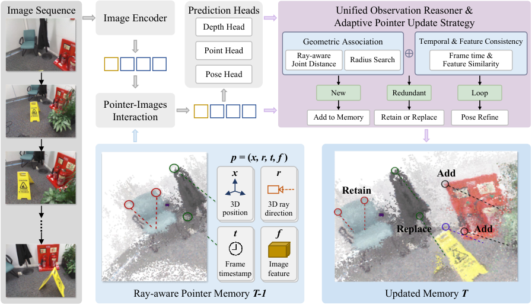

Problem Setup
01 · Observation Identity in a Streaming Reconstruction
连续重建要求把新图像里的观测与已有历史对应起来。相同外观可能来自不同位置；同一表面换视角后又可能出现明显不同的外观。空间位置能够缩小匹配范围，但位置预测本身也会漂移，因此关联不能被理解为一次永远正确的查表。
本文延续 pointer-based reconstruction 的表示：历史不只是一组无坐标的 token，而是附着在三维位置上的特征条目。相对 Point3R，作者给条目增加观测射线与源帧时间，再改动更新策略和回环处理。
这里的 pointer 是有空间属性的观测，不是对象实例，也没有被赋予语言类别。输入是图像流，网络预测相机、深度和点表示；后续关联依赖这些估计。因此，记忆规则与位姿误差是相互影响的。
Architecture
02 · Figure 2: The Read–Predict–Update Cycle

Feifei Li et al. · 2026 · CC BY 4.0 · Unmodified original figure · Paper & Caption ↗
先看原图左侧：当前帧经 Image Encoder 转为特征，与下方上一时刻的 pointer memory 交互。中间预测头输出 depth、point 和 pose，使新观测能够进入同一空间坐标系。
右上角才是更新逻辑。几何关联结合半径搜索与射线差异，时间与特征信息用于辅助一致性判断。图中将候选分为 New、Redundant 和 Loop，分别对应新增、保留或替换，以及位姿细化。下方展示更新后的 pointer 集合，供下一帧读取。
原图中的 Feature Similarity 属于模块示意；正文式（7）明确给出的联合距离只含位置差和射线差。不能依据图中一个标签补造特征权重、置信度门控或可训练选择网络。将示意图与可复现的公式层级分开，是读这篇论文需要保留的一处细节。
Representation
03 · What a Pointer Stores
每个条目包含 x、r、f、t：三维位置 x，单位射线 r，视觉特征 f，以及创建它的帧索引 t。射线从相机指向观测点，必须与位置使用相容的坐标约定，才能跨帧比较。
位置说明观测落在哪里，射线说明它是在什么方向上被看到的。两个位置很近的预测点，若来自明显不同的方向，其外观和遮挡条件可能不同。保留观测方向相当于保留证据的获取条件，而不只是存储一次几何估计。
时间索引用于区分近期重复与间隔较长的重访。它不表示时间越新就一定越可靠，也不是一个自动的遗忘分数。f 仍然是学习特征；增加显式几何字段没有把整个系统变为手工几何算法。
mₖ = {xₖ, rₖ, fₖ, tₖ}
xₖ ∈ ℝ³, ‖rₖ‖₂ = 1Association Rule
04 · Joint Position–Ray Distance
正文分别定义欧氏位置距离与 1−cosθ 形式的射线差，再线性加权。实验给出 λpos=1、λang=0.1。注意射线差是无量纲量，位置距离依赖坐标尺度；同一权重迁移到不同尺度设置时，二者的相对作用会改变。
同方向时射线差为 0，正交时为 1，反向时为 2。位置接近且方向相近被视为局部重复；位置接近但方向差大可成为重访候选；距离较远则被当作新区域。它们是用于组织更新的判据，而不是物理身份的充分条件。
用教学算例看权重：同样的位置差下，夹角 60° 产生 0.5 的射线差，加权后增加 0.05 的联合距离。这只能解释排序如何改变，不能在未确认坐标单位时宣称等价于现实中的五厘米。
半径邻域的搜索先约束空间距离，联合距离再在候选中选择条目。若初始位姿漂移使真实对应落到半径外，后续方向信息也未必能补救，反而可能创建重复条目。
dpos = ‖xnew − xₖ‖₂ dang = 1 − rnew · rₖ D = λpos dpos + λang dang
Memory Update
05 · Retain or Replace: The Actual Update Policy
新 pointer 的半径邻域为空时，直接加入 memory。有邻居时，按联合距离找到最接近的候选，然后在旧条目与新条目之间等概率选择一个保留。原文第 3.4 节与第 4.5 节均明确说明这个随机规则，消融表用 random 表示它。
这种处理避免了每次都把两个特征做平均。平均虽然能压缩数量，却可能得到一个不再对应任何具体观测条件的混合特征；随机保留至少保存了一个实际观测条目。不过，这只是机制解释，不能由此断言保留下来的必然是“最有信息”的观测。
恒保留旧条目可能拒绝后续改进的观测，恒替换又可能丢掉较好的旧证据。随机策略在二者之间做折中，但没有利用显式可靠性或未来任务收益。作者在结论中也指出，当前选择尚未充分利用观测信息量。
另外，“有邻居则数量不增”不等于全局固定容量。持续探索新空间时，空邻域仍会新增条目。原文没有在上述规则中给出一个覆盖所有新区域的总条目上限与淘汰算法。
Global Consistency
06 · Loop Candidates and Pose Refinement
回环候选同时满足三个条件：位置足够近、射线差超过阈值、帧间隔超过时间阈值。相比只看新旧两点的外观，这额外表达了“隔了一段时间，从另一方向重新看到附近位置”的模式。
触发后，正文描述在相应帧之间增加位姿约束并做 pose graph refinement，再按细化坐标更新 pointer memory；回环区域还使用基于 Fisher information 的选择来稀疏化条目。由此可见，完整系统不是每帧网络预测之后就完全没有优化步骤。
论文主表的 Optim. 栏没有为本文勾选，而方法段又明确包含回环触发的位姿细化。笔记中保留这一口径差异：该栏不能被转述成“系统不执行任何优化”。优化触发频率、计算预算以及与其他方法 GA 的范围差异，应在复现时进一步核查。
训练数据、损失细节、回环阈值和优化配置在本文 v1 中没有形成完整的复现说明。本次不据此补写继承某个训练配方的结论，也不把下表当作已独立复现的成绩。
Experimental Evidence
07 · Reconstruction Quality and Update Ablations
主表的 7-Scenes mean accuracy 从 Point3R 的 0.085 变为 0.035，mean completeness 从 0.087 变为 0.025；但 mean normal consistency 从 0.739 降到 0.685。前两项越小越好，法向一致性越大越好，因此不能将结果概括为所有几何指标全面改善。
NRGBD 消融表比较 retain、replace 和 random。随机选择的平均位置误差与完整度误差低于另外两种更新，但法向指标与 retain 基本持平，并低于 Point3R。这组结果支持具体指标下的权衡，而不证明随机机制具有普遍最优性。
下面采用 Table 4 的数字。其 Point3R 完整度均值为 0.063，而主表 Table 1 报告 0.069；两个表的基线数字不完全一致，因此不要跨表混算单一相对增益。
位姿方面也有边界：Sintel ATE 本文与 CUT3R 都是 0.213；TUM-dynamics ATE 本文为 0.049，CUT3R 为 0.046。某项误差降低不能替代逐数据集、逐指标的阅读。
| NRGBD · Table 4 | Acc Mean ↓ | Comp Mean ↓ | NC Mean ↑ |
|---|---|---|---|
| Point3R | 0.076 | 0.063 | 0.835 |
| Retain | 0.069 | 0.025 | 0.771 |
| Replace | 0.075 | 0.026 | 0.765 |
| Random | 0.061 | 0.022 | 0.771 |
Reading Notes
08 · Memory Measurements and Research Connections
Figure 5 统计的是 reserved GPU memory。正文给出的区间约为基线 7.5–10.5 GB、本文 6–9 GB；这是测得的分配器预留显存，不只是 pointer 条目的理论字节数。它混合了模型、缓存和运行时分配行为，不能直接当作固定容量保证。
这篇与语义记忆的联系，在于它展示了记忆条目除了内容特征，还可以保存观测条件，并让这些字段真正改变关联与更新。若将语言对齐特征加入这种结构，需要证明它在几何与方向已经可用时仍提供额外信息，而不是只增加一个向量。
更具体的研究问题是：语义能否帮助识别跨视角互补证据，同时避免把同类不同实例合并？应固定总容量、重建骨干和回环预算，对比随机保留、仅几何选择以及语义几何选择。这个实验建议是个人分析，不是本文已经验证的结论。
Discussion
Reading Questions
Is retain-or-replace learned?
本文给出的冗余邻域更新是等概率随机选择，没有给出可学习的价值打分器。不要把 adaptive 一词自动理解成学习策略。
Does the method guarantee constant memory?
上述局部更新规则不保证全局固定容量；遇到无邻居的新区域仍然会新增条目。显存曲线只是所测序列上的经验结果。
Does a large ray difference prove a loop closure?
不能。它与位置和时间一起提供候选条件，仍依赖几何估计与后续验证。快速视角变化或位置漂移都可能影响判定。
References
Figures reproduced from the linked paper under CC BY 4.0. Explanations and analysis are reading notes, not author statements.
Verified on October 12, 2026. Paper claims refer to the linked versions; code references reflect the official repositories on this date.